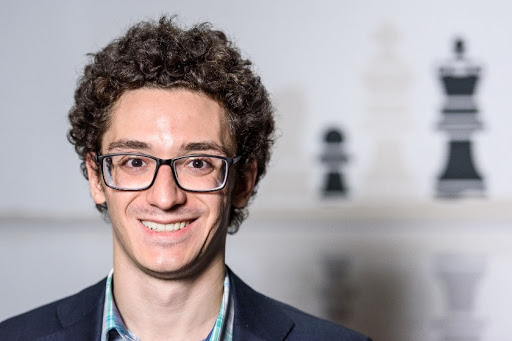

Fabiano Caruana
Fabiano Caruana
Jest jednym z najzdolniejszych szachistów w historii szachów. W roku 2002, w wieku 10 lat i 61 dni, został najmłodszym zawodnikiem, który w turniejach organizowanych przez amerykańską federacją szachową pokonał zawodnika z tytułem arcymistrza (wydarzenie to miało miejsce 28 września w Nowym Jorku, a pokonanym był wówczas Aleksander Wojtkiewicz). W tym samym roku zdobył w Villa Giardino tytuł mistrza państw panamerykańskich w kategorii juniorów do lat 10, a rok później w Bogocie powtórzył to osiągnięcie w grupie do lat 12. W 2005 odniósł pierwszy znaczący sukces na arenie międzynarodowej, triumfując w cyklicznym turnieju First Saturday w Budapeszcie. W 2006 podzielił I miejsca w Madrycie (wspólnie z Herminio Herráizem Hidalgo) oraz w rozegranych w Cremonie mistrzostwach Włoch, ostatecznie zdobywając srebrny medal po porażce w barażu z Michele Godeną. W marcu, kwietniu i lipcu 2007 wygrał trzy turnieje First Saturday w Budapeszcie, w każdym wypełniając normę na tytuł arcymistrza i w roku tym został najmłodszym w historii amerykańskich i włoskich szachów (Caruana posiada podwójne obywatelstwo) zawodnikiem, który otrzymał ten tytuł. Pod koniec roku zdobył w Martina Franca pierwszy w swojej karierze tytuł mistrza Włoch z wynikiem rankingowym 2740, wyprzedzając następnego zawodnika w tabeli o 3 punkty. W 2008 roku zwyciężył w turnieju Corus–C w Wijk aan Zee oraz ponownie zdobył tytuł mistrza Włoch. W styczniu 2009 roku ponownie zwyciężył w Wijk aan Zee, tym razem w turnieju Corus–B. W 2010 roku zwyciężył w 42. edycji cyklicznego turnieju w Biel.
